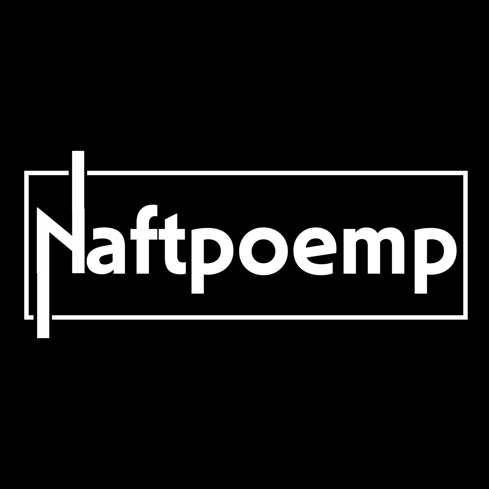
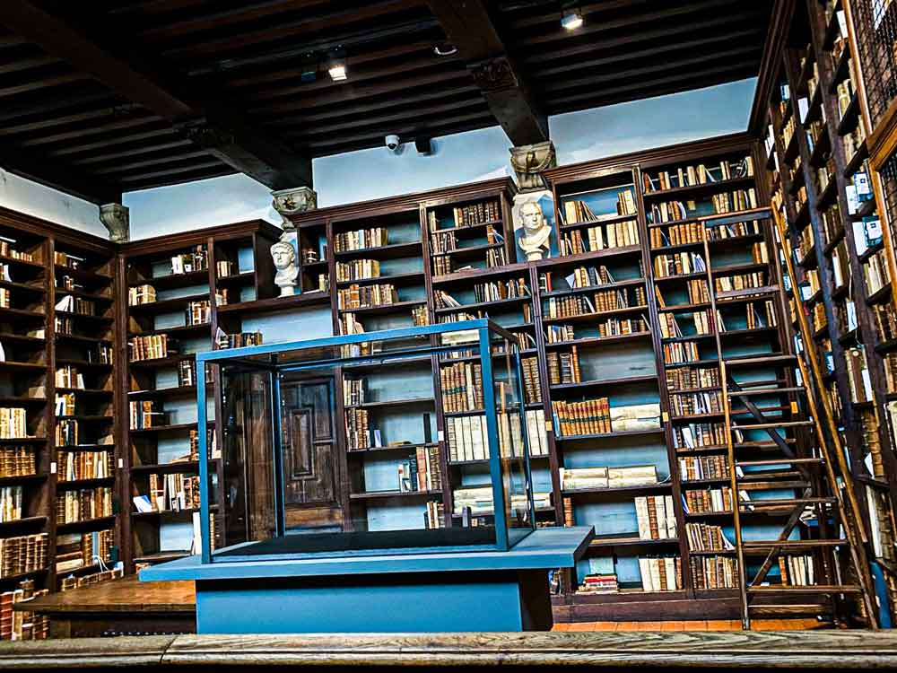
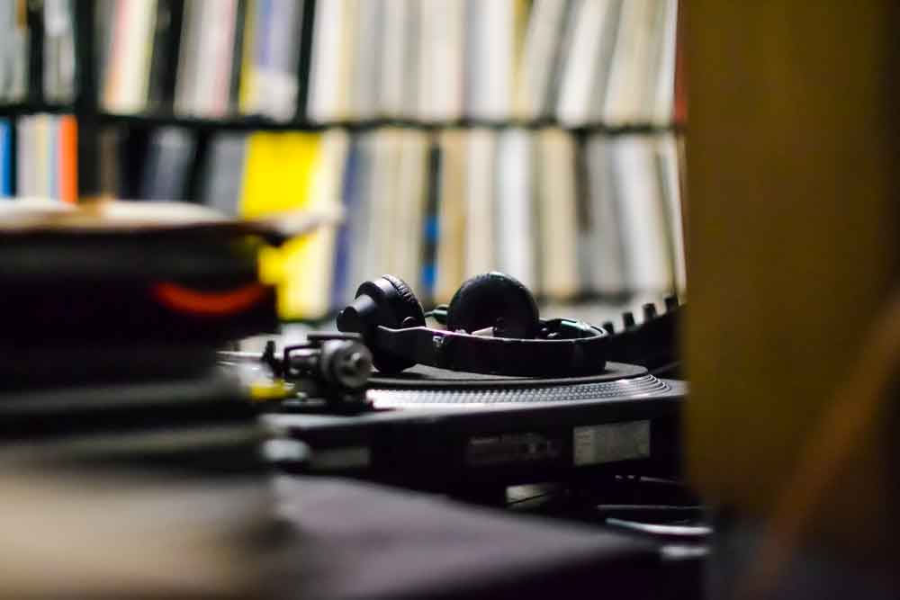
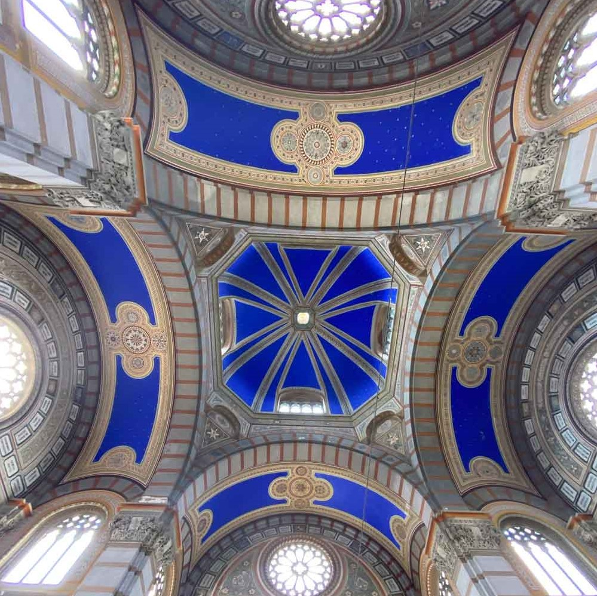
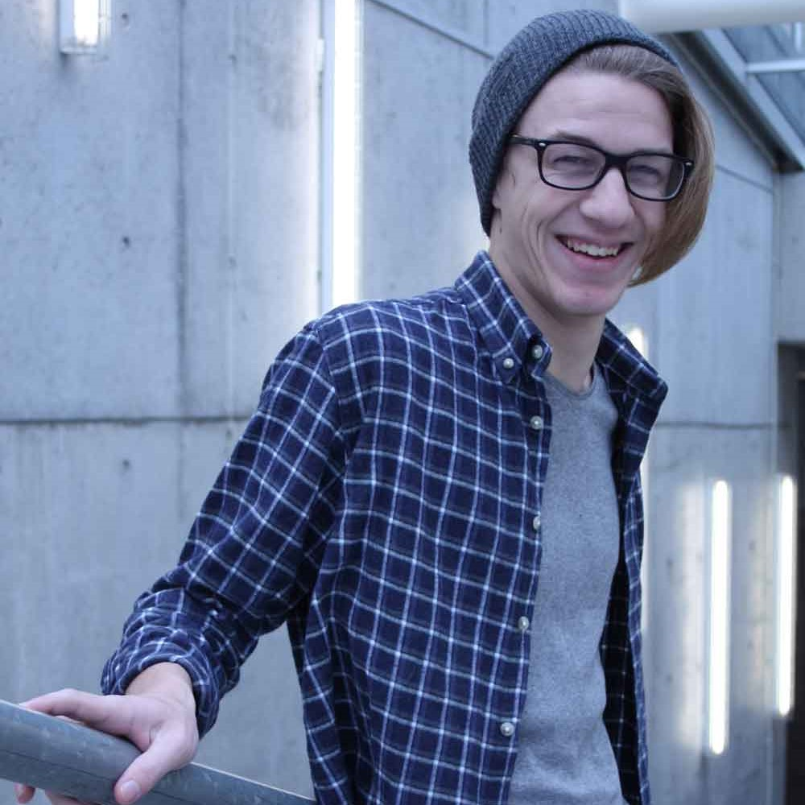

Zelfgemaakt logo voor DJ Naftpoemp

Een van de twee bibliotheekruimtes in het museum Plantin-Moretus in Antwerpen.

In platenzaak Space Hall in Berlijn is het mogelijk om de platen in de winkel zelf te beluisteren. Elke speler heeft zijn eigen hoofdtelefoon.

Plafond in Cimitero Monumentale di Milano, de grote begraafplaats in Milaan.

Portret van een klasgenoot, gemaakt in Campus de Vest van Thomas More Mechelen.